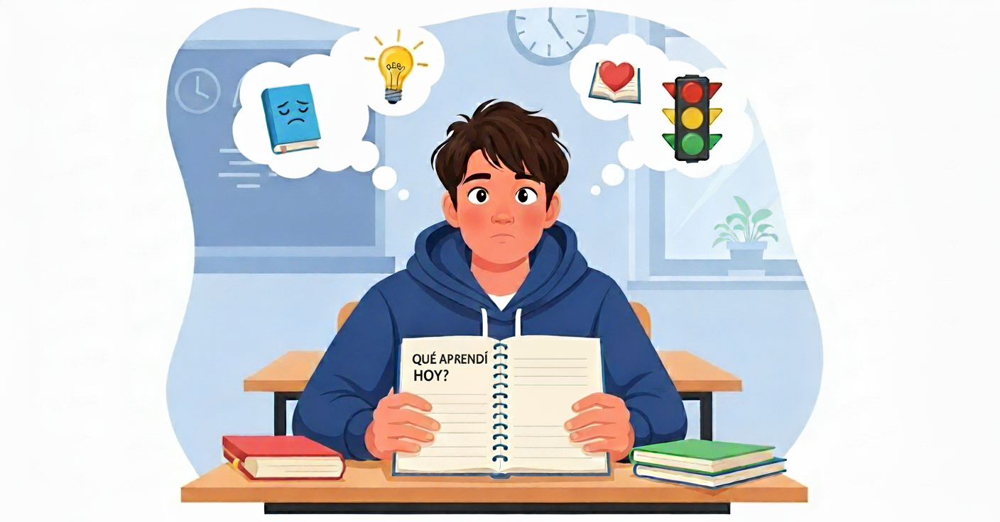

Juan creando un nuevo hábito
Un día, al terminar la clase, el profesor le pidió a Juan que no guardara de inmediato sus cuadernos y libros. Le dijo: “Antes de irte, piensa un momento: ¿qué aprendiste hoy?, ¿qué fue lo más fácil?, ¿qué fue lo más difícil?, ¿qué podrías mejorar mañana?”. Al principio, Juan se sorprendió. Nunca se había detenido a pensar en eso; siempre terminaba la clase y salía corriendo. Sin embargo, decidió probar. Al reflexionar, se dio cuenta de que había comprendido bien el tema, pero también que aún tenía dudas en algunos puntos. Ese pequeño ejercicio le ayudó a organizar mejor su estudio y a sentirse más seguro.

Lo que Juan descubrió es lo que llamamos Reflexión continua: un hábito de detenerse, día a día, para analizar lo que se aprende, lo que se siente y lo que se puede mejorar. No es algo que se hace una sola vez, sino una práctica constante que fortalece el pensamiento crítico y hace que el aprendizaje sea más profundo y significativo. Para los estudiantes de décimo grado, la reflexión continua es como un espejo que nos muestra nuestros avances y también aquello que debemos reforzar. Con ella, cada estudiante se convierte en protagonista de su propio aprendizaje, capaz de tomar decisiones, asumir responsabilidades y crecer no solo en el colegio, sino también en su vida personal.Objetivo de Aprendizaje
Al finalizar el estudio de este Objeto Virtual de Aprendizaje, estarás en capacidad de:
-
🎯
Implementar estrategias que promuevan la reflexión constante sobre las experiencias de aprendizaje, permitiendo reconocer aciertos, dificultades y oportunidades de mejora personal y académica.
Zimmerman, B. J. (2002). Becoming a Self-Regulated Learner: An Overview. Theory Into Practice, 41(2), 64-70. https://doi.org/10.1207/S15430421TIP4102_2